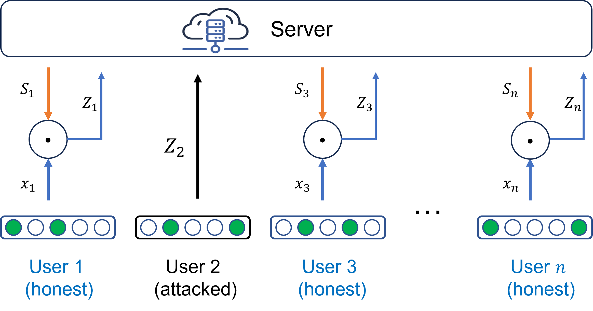

Robust Estimation of Sparse Numerical Vectors under Local Differential Privacy
ACM CCS 2026
1. Shenzhen Campus of Sun Yat-sen University 2. Zhejiang University 3. Guangzhou University 4. National Interdisciplinary Research Center of Engineering Physics 5. Anhui University of Science and Technology

Abstract
Local differential privacy (LDP) protocols are vulnerable to poisoning attacks. Existing research have proposed efficient defense strategies for single-item users. However, in practice, a user may possess multiple items. The defense against poisoning attacks for multi-item users is challenging, because due to larger output spaces, the adversary can conduct more powerful attacks without being detected. In this paper, we address the robust sparse vector mean estimation problem, in which each user has a vector with m nonzero coordinates. We propose Randomized Projection with Clipping (RPC). Firstly, the server sends a random binary vector to each user. The user then projects its local data on the vector, and clip the value to restrict the attacker's capability. To handle clipping bias, we propose a correction method based on a careful analysis that gives an exact expression of the bias. As a result, bias-variance tradeoff is no longer needed, thus the clipping threshold can be further reduced to shrink the output space and enhance robustness. We provide a rigorous theoretical guarantee of the estimation error under all possible attacks. Numerical experiments show that under trusted environments, our new method achieves comparable or better performance than existing methods, indicating that our method is already an efficient estimator in its own right. Under untrusted environments, our method is also significantly more robust to poisoning attacks.
Resources
Citation
@inproceedings{ZZWYXZZC26,
author = {Puning Zhao and Zhikun Zhang and Shaowei Wang and Sheng Yue and Bangzhou Xin and Tianhang Zheng and Pengfei Zhang and Xiaochun Cao},
title = {{Robust Estimation of Sparse Numerical Vectors under Local Differential Privacy}},
booktitle = {{CCS}},
publisher = {ACM},
year = {2026},
}